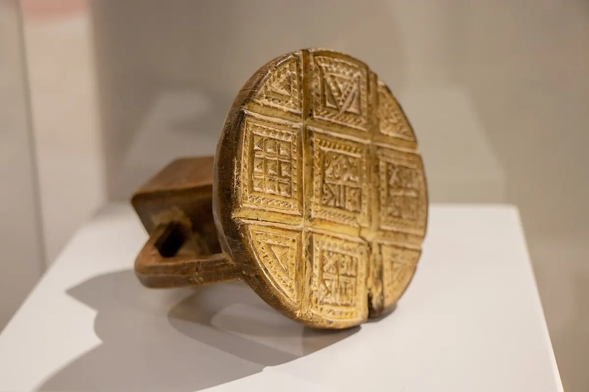

À la fin de la Liturgie, on reçoit souvent un petit pain rond, marqué d’une croix : la prosphore. Ce pain simple porte tout le sens de l’Eucharistie et de la prière de l’Église pour les vivants et pour les défunts. Voici ce qu’il signifie et comment le recevoir.Le petit pain de l’offrande : ce qu’il signifie et comment le recevoir.
Cinq prosphores préparées pour la Liturgie, avec les listes de noms « pour les vivants » et « pour les défunts ». Photo : Korennaya, CC BY-SA 3.0
Le mot grec prosphora signifie « offrande ». La prosphore est un petit pain rond, levé, fait seulement de farine de froment, d’eau, de levain et d’un peu de sel, souvent avec de l’eau bénite. Elle est cuite avec prière par une personne bénie pour ce service, la prosphornitsa.
Un pain qui parle
Deux parties superposées, façonnées séparément puis unies : elles évoquent les deux natures du Christ, divine et humaine, et aussi l’homme, corps et âme.
Le sceau sur le dessus : une croix avec les lettres IC XC NI KA, « Jésus-Christ est vainqueur ».
Le levain rappelle la force vivifiante de l’Esprit Saint ; la farine de nombreux grains, l’humanité rassemblée en un seul corps.
02 Le pain de l’offrande
Dans l’Église des premiers siècles, les fidèles apportaient eux-mêmes le pain, le vin, l’huile et la cire nécessaires à l’office. Les diacres recevaient ces offrandes et notaient le nom de ceux qui les avaient apportées ; ces noms étaient lus pendant la Liturgie. On offrait aussi au nom des défunts.
Une partie du pain et du vin était consacrée pour l’Eucharistie ; le reste était partagé lors d’un repas fraternel, l’agapè. Peu à peu, le nom de « prosphore » a désigné seulement le pain de la Liturgie, cuit spécialement pour elle. Le lien entre le pain offert et les noms de ceux que l’on recommande à Dieu est resté : c’est tout le sens des « notes » que l’on remet aujourd’hui.
03 À la Liturgie : les cinq prosphores
Avant la Liturgie, le prêtre prépare les dons à l’autel de la préparation : c’est la proscomidie. Il utilise cinq prosphores, en souvenir des cinq pains de la multiplication (Matthieu 14, 17-21).
1ʳᵉ
L’Agneau
Avec une petite lance, le prêtre découpe le centre carré marqué IC XC NI KA, en disant les paroles d’Isaïe : « Comme une brebis, il a été mené à l’abattoir. » Ce pain, l’Agneau, deviendra le Corps du Christ.
2ᵉ
La Mère de Dieu
Une parcelle triangulaire est placée à la droite de l’Agneau : « La Reine se tient à ta droite » (Psaume 44).
3ᵉ
Les saints
Neuf parcelles sont retirées pour les « neuf ordres » de saints : saint Jean-Baptiste, les prophètes, les apôtres, les hiérarques, les martyrs, les moines, les anargyres, les saints du jour et l’auteur de la Liturgie.
4ᵉ
Les vivants
Le prêtre retire des parcelles pour l’Église, le patriarche, l’évêque, et pour les vivants qu’il nomme.
5ᵉ
Les défunts
Puis pour les défunts : nos parents, nos proches, tous ceux qui reposent dans l’espérance de la résurrection.
Une prosphore « de la Mère de Dieu », marquée de son monogramme. Photo : Vizu, CC BY-SA 3.0La prosphore « des neuf ordres » : les neuf petites entailles marquent les parcelles retirées en l’honneur des saints. Photo : GPodkolzin, CC BY-SA 3.0
Toutes ces parcelles sont disposées sur la patène autour de l’Agneau : c’est une icône de toute l’Église, la Mère de Dieu, les saints, les vivants et les défunts, rassemblés autour du Christ.
04 Nos proches dans la prosphore
Avant la Liturgie, les fidèles remettent des notes avec les prénoms de baptême de leurs proches : une note « pour la santé » des vivants, une autre « pour le repos » des défunts. Les noms sont lus à l’autel, et pour chacun le prêtre retire une parcelle d’une prosphore. On reçoit ensuite cette prosphore, dite « dont on a prélevé ».
À la fin de la Liturgie, après la communion des fidèles, toutes les parcelles sont versées dans le Calice, tandis que le prêtre dit :
Lave, Seigneur, les péchés de ceux qui ont été commémorés ici, par ton Sang précieux, par les prières de tes saints.Divine Liturgie
C’est pourquoi l’Église attache tant d’importance à cette prière pour les autres : nos proches, vivants et défunts, sont présentés au Christ dans le sacrifice même de la Liturgie.
05 L’antidoron et l’artos
L’antidoron : les morceaux de la prosphore dont on a retiré l’Agneau, distribués à la fin de la Liturgie. Photo : Botev, CC BY-SA 4.0
L’antidoron (« au lieu du don ») : ce sont les morceaux de la prosphore dont on a retiré l’Agneau. Ils sont distribués à la fin de la Liturgie, quand on vient vénérer la croix. Saint Syméon de Thessalonique explique qu’il est donné « à la place des redoutables Dons » à ceux qui n’ont pas communié.
L’artos (« pain levé ») : un grand pain béni le jour de Pâques, marqué de la croix ou de l’icône de la Résurrection. Il reste dans l’église toute la Semaine radieuse, puis il est partagé entre les fidèles, qui le gardent précieusement.
Ce n’est pas la communion. La prosphore, l’antidoron et l’artos sont du pain béni. Seuls les dons consacrés, dans le Calice, sont le Corps et le Sang du Christ.
06 À la maison
À jeun, avec prière. On mange la prosphore le matin, avant tout autre repas, souvent avec un peu d’eau bénite, après avoir fait le signe de croix.
En petits morceaux. Pour la garder, on la coupe fraîche en petits morceaux que l’on laisse sécher dans un sachet de tissu ; on peut ainsi la conserver longtemps.
Près des icônes. On la range avec respect dans le coin des icônes.
Si elle s’abîme, on ne la jette pas : on la brûle, ou on la rapporte à l’église.
Seigneur mon Dieu, que ton saint don et ton eau sainte soient pour l’illumination de mon intelligence, l’affermissement des forces de mon âme et de mon corps, la santé de mon âme et de mon corps, la victoire sur mes passions et mes faiblesses, selon ton infinie miséricorde, par les prières de ta Mère très pure et de tous tes saints. Amen.Prière en recevant la prosphore et l’eau bénite
Texte slavon
Господи Боже мой, да будет дар Твой святый и святая Твоя вода в просвещение ума моего, в укрепление душевных и телесных сил моих, во здравие души и тела моего, в покорение страстей и немощей моих по безпредельному милосердию Твоему молитвами Пречистыя Твоея Матери и всех Святых Твоих. Аминь.
07 Les sceaux de prosphore
Le sceau qui marque la prosphore est souvent un bel objet, en bois, en bronze ou en pierre. Les anciens sceaux sont conservés dans les musées comme des témoins de la piété de générations de chrétiens.

Un sceau ancien en bronze, divisé par la croix en compartiments. Photo : Koray, CC BY-SA 4.0Un sceau du monastère de Solovki, dans le Grand Nord russe. Photo : Михаил Семёнов, CC BY-SA 4.0
Questions fréquentes
La prosphore en questions
Avant la Liturgie, écrivez sur une note les prénoms de baptême (orthodoxes) de vos proches, une note pour les vivants, une autre pour les défunts, et remettez-la avec une offrande. Renseignez-vous auprès de la paroisse sur la façon de faire.
La prosphore et l’antidoron sont destinés d’abord aux fidèles. Dans beaucoup de paroisses, le pain béni est aussi offert à ceux qui viennent vénérer la croix à la fin de l’office. En cas de doute, demandez simplement au prêtre.
Les prosphores destinées à la Liturgie sont cuites avec prière, selon des règles précises, par des personnes qui ont reçu une bénédiction pour cela. Si vous souhaitez aider la paroisse de cette façon, parlez-en au prêtre.
Parce qu’elle relie trois choses : l’offrande de nos mains, le sacrifice du Christ et la prière de toute l’Église. En recevant la prosphore, on emporte chez soi un peu de la Liturgie et de la prière faite pour nos proches.
Cette page s’appuie sur l’encyclopédie et les articles de « Azbouka very » (azbyka.ru) consacrés à la prosphore, à l’antidoron et à l’artos ; la prière est traduite par nos soins. Photos : Wikimedia Commons, sous licences libres — Korennaya (CC BY-SA 3.0), Vizu (CC BY-SA 3.0), GPodkolzin (CC BY-SA 3.0), Botev (CC BY-SA 4.0), Koray (CC BY-SA 4.0), Михаил Семёнов (CC BY-SA 4.0).